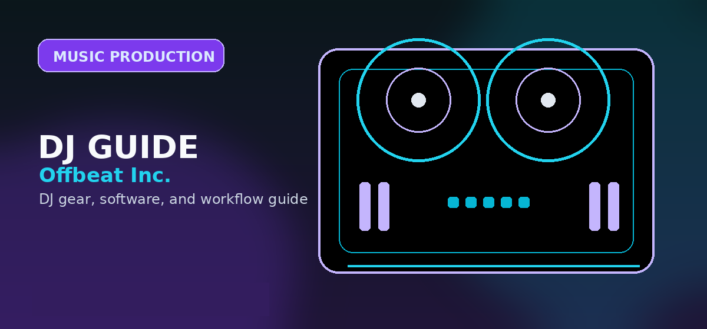

FL Studio Review 2026: The Best DAW for Hip Hop and Electronic Beatmaking?
Comprehensive guide to FL Studio review 2026 best DAW beatmaking hip hop electronic music with practical recommendations and current buying notes — updated 2026.

Disclosure: This page uses affiliate links. We may earn a commission at no extra cost to you. Full disclosure →
Entering 2026, the landscape of digital music production is more competitive than ever, yet FL Studio continues to hold a commanding lead in the beatmaking community. For producers specializing in Hip Hop, Trap, and Electronic music, the choice of a Digital Audio Workstation (DAW) often determines the speed of their creative flow. FL Studio has evolved from a simple step-sequencer into a professional-grade powerhouse capable of handling everything from initial sketching to final cinematic mastering. Its unique pattern-based workflow remains the gold standard for those who think in loops and rhythmic blocks rather than linear recordings. Whether you are a bedroom producer aspiring to land your first placement or a seasoned pro seeking a frictionless composition environment, FL Studio offers a blend of accessibility and deep technical capability that is unmatched in the current market.
The Gold Standard for Beatmaking: Piano Roll & Step Sequencer
The core of FL Studio's dominance lies in its legendary Piano Roll and Step Sequencer. In 2026, these tools remain the most intuitive in the industry for MIDI composition. The Step Sequencer allows producers to lay down drum patterns in seconds, making it the ideal environment for the rapid-fire iteration required in modern Hip Hop and EDM. Meanwhile, the Piano Roll provides an unparalleled level of control over pitch, velocity, and glide, allowing for the complex melodic runs and "humanized" swing that define professional beatmaking. While competitors like Ableton Live offer powerful MIDI tools, FL Studio’s interface is specifically designed to remove the friction between an idea in your head and the sound coming out of your monitors.
Workflow and Composition: The Power of Pattern-Based Production
Unlike traditional linear DAWs, FL Studio utilizes a pattern-based workflow that mirrors the way electronic musicians actually create. Instead of recording a song from start to finish, you build "patterns"—individual loops of drums, bass, or melodies—and then paint those patterns into the Playlist window to arrange your song. This modular approach is a massive advantage for electronic music, where restructuring a track on the fly is common. By 2026, the integration between the Channel Rack and the Playlist has become even more seamless, allowing producers to tweak a single drum hit in a pattern and have it update across the entire arrangement instantly, drastically reducing the time spent on tedious editing.
Stock Plugins and Professional Sound Design
One of the strongest arguments for FL Studio is its comprehensive suite of native plugins. The "All Plugins Edition" provides a sonic arsenal that eliminates the immediate need for expensive third-party VSTs. Powerhouses like Sytrus and Harmor continue to be essential for complex sound design, while the updated 2026 versions of the mixer and mastering effects provide a polished, "radio-ready" sound. From the aggressive saturation needed for 808s to the lush reverbs required for ambient electronic textures, the internal tools are engineered for the modern ear. This integrated ecosystem ensures stability and low CPU latency, allowing you to push your project to the limit without the system crashes often associated with overloading a session with third-party plugins.
The Value Proposition: Lifetime Free Updates
In an era of suffocating subscription models, FL Studio's "Lifetime Free Updates" policy is a game-changer. Once you purchase a license, you never pay for a version upgrade again. This creates an incredible long-term value proposition compared to the recurring costs of other professional software. With tiers ranging from the entry-level Fruity Edition (~$99) to the comprehensive All Plugins Edition (~$499), there is a price point for every stage of a producer's career. This commitment to the user ensures that you always have access to the latest AI-driven mixing tools and feature updates without a monthly bill, allowing you to invest your budget into high-quality studio monitors or hardware controllers instead of software renewals.
2026 DAW Comparison: Which One Should You Choose?
| Feature | FL Studio | Ableton Live | Logic Pro |
|---|---|---|---|
| Best For | Beatmaking, Hip Hop, EDM | Live Performance, Sound Design | Recording, Composition, Mac Users |
| Workflow | Pattern-Based / Loop-Centric | Session View / Linear | Traditional Linear / Studio |
| Pricing | $99 - $499 (Lifetime Updates) | $440 - $740 (Paid Upgrades) | $199 (One-time / Mac Only) |
| MIDI Tools | Industry-Leading Piano Roll | High-level Warp/Clip Control | Robust Score Editor |
| OS Support | Windows & macOS | Windows & macOS | macOS Only |
FL Studio 2026: Pros & Cons
✅ Pros
- Lifetime free updates — pay once, own forever
- Industry-best Piano Roll for MIDI composition
- Pattern-based workflow ideal for beatmaking
- Huge bundled plugin library (Sytrus, Harmor, Gross Beat)
- Fastest workflow for hip hop & electronic producers
- One-click export to stems, wav, mp3
❌ Cons
- No audio recording on entry-level Fruity Edition
- Less intuitive for live performance than Ableton
- Windows-first history; macOS support still maturing
- Steep learning curve for traditional recording workflows
- Limited on-board mixing vs Pro Tools / Logic
FL Studio Workflow: Pattern-Based vs. Linear
FL Studio's killer feature is its pattern-centric workflow. Unlike traditional linear DAWs, FL Studio lets you create musical patterns, then arrange them on a timeline without leaving the Piano Roll. This is perfect for electronic producers who work beat-by-beat. Hip hop and trap producers especially love this because you can audition full drum patterns in real time, adjust swing and timing, then lock them into the arrangement. It takes about 2-3 days to feel comfortable, but within a week, you'll understand why so many Grammy-winning producers choose FL Studio.
FL Studio for Live Performance DJs
While FL Studio excels at studio production, it's less common in live DJ booths compared to Traktor or Serato. However, the crossover is growing. FL Studio's new mixer (v21+) supports hot-cue mapping and sample-triggered drums, making it viable for electronic live sets. If you plan to both produce and perform your own tracks, FL Studio covers both worlds — though you'll need time to master both modes. Most pros do 80% production work, 20% live performance, making FL Studio's strength where you need it most.
Which Edition Should You Buy?
Start with Fruity Edition ($99) if you're only composing melodies and drums. Upgrade to Producer Edition ($199) if you need audio recording and mixing. Go All Plugins Edition ($499) only if you're a mastering engineer or need every FL Studio plugin — the default set is genuinely professional-grade. Lifetime free updates mean your $199 investment stays current for 10+ years, making FL Studio exceptionally good value.
Key Specs
Quick Verdict
If your primary goal is to create beats, produce electronic music, or dive into the world of Hip Hop, FL Studio is the definitive choice for 2026. While Ableton Live is superior for live stage performances and Logic Pro is a powerhouse for traditional studio recording, neither matches FL Studio's speed and intuition when it comes to MIDI composition and loop-based arrangement. The addition of lifetime free updates makes it the most financially sustainable professional investment a modern producer can make.
Ready to start producing? Check out FL Studio on Search FL Studio Producer Edition software on Amazon → or the official Image-Line site for the latest bundles.
Shop on Amazon
Control FL Studio with hardware — MIDI keyboards and controllers on Amazon.
Also on Plugin Boutique
Buy FL Studio direct — often cheaper than Amazon, includes license key.
Frequently Asked Questions
Is FL Studio worth buying in 2026?
Yes — FL Studio's lifetime free updates policy is unique among major DAWs. Pay once ($99 for Fruity, $199 for Producer, $299 for Signature) and receive all future versions forever. For comparison, Ableton Live Standard is $499 with paid major upgrades. FL Studio is the best value DAW for long-term use.
FL Studio vs Ableton Live — which is better?
Depends on workflow. FL Studio excels for beat-making, melody composition, and electronic music production — its piano roll is widely considered the best in any DAW. Ableton Live excels for live performance, loop-based composition, and session view workflows. Both are industry standard; the best choice is whichever workflow matches how you think musically.
Does FL Studio work on Mac?
Yes. FL Studio for macOS (native Apple Silicon support since v20.9) is fully equivalent to the Windows version. The iOS app (FL Studio Mobile, $15) syncs projects with the desktop version. Mac users should note: some legacy FL plugins and third-party VSTs may run through Rosetta 2 translation, which adds minimal overhead.
What is the difference between FL Studio Fruity and Producer editions?
Fruity ($99) includes audio clips on the playlist — so you can't record live audio. Producer ($199) adds audio recording, audio clips on the playlist, and the Edison audio editor. For music production beyond MIDI and samples, Producer is the minimum viable edition. Signature ($299) adds Harmor, Sytrus, and Gross Beat.
Can beginners learn FL Studio easily?
FL Studio has a steeper initial learning curve than GarageBand but gentler than Ableton's session view. The Pattern-based workflow (create patterns, arrange on Playlist) takes 1–2 weeks to internalize. Image-Line's YouTube channel has 200+ tutorial videos covering every feature, and the in-app help files are unusually comprehensive.